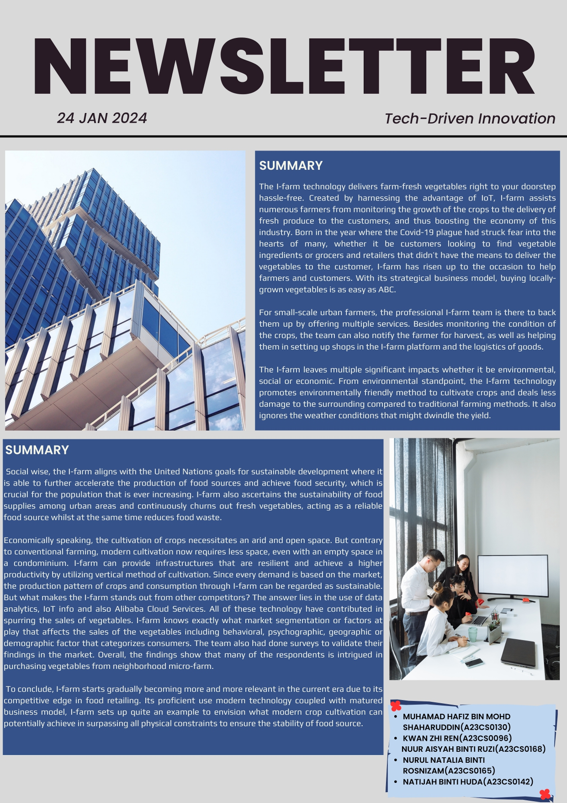
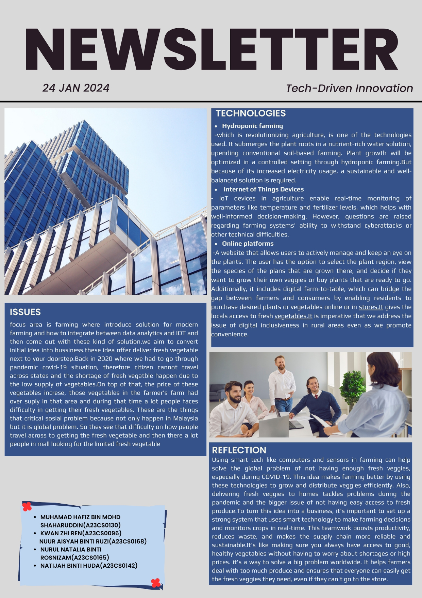
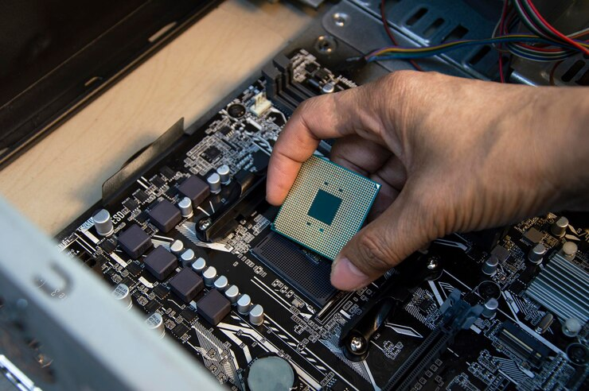
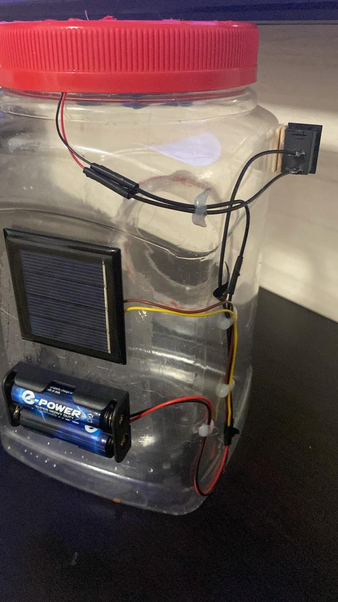
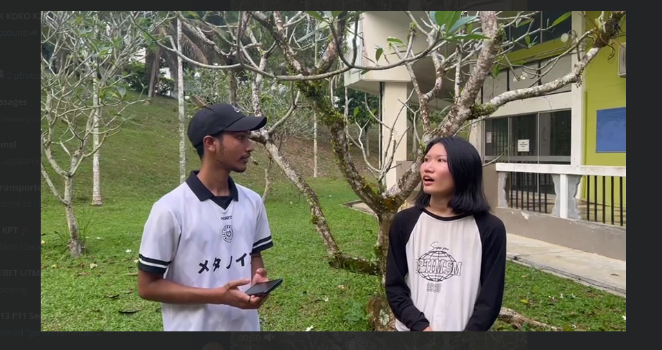
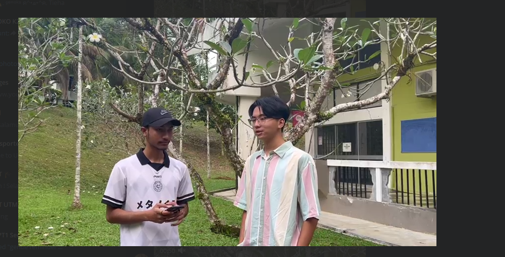
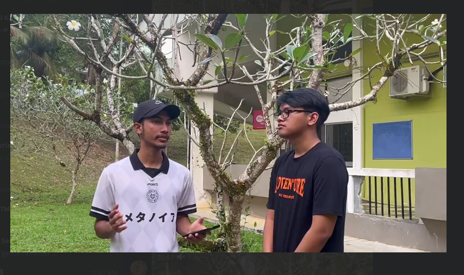

I'm currently an UTM student and enrolled in The Banchelor of Computer Science (Bioinformatics) with Honours. I am 20 years old and currently lives in Kampung Serting Ulu in Negeri Sembilan. I'm currently learning C++ and I have some knowledge in Java as I took it in the matriculation. I have a few hobbies that I took up which are reading comics, listening to musics and also reading some novels and before I forgot,I play Mobile Legends as a hobby too.
You can reach me here :
- nuuraisyah@graduate.utm.my
- shacya11@gmail.com

 Certificates and awards..
Certificates and awards..

Group Reflection: The thing i learn is that fresh graduate will also be judge by their own soft skills. I have to focus more on solving my own problem . Other than that i have
to think outside the box in while trying to solve new problem.Futhermore , being punctual shows that us being serious while dealing with anything
My Own Reflection: I learned that we must have a variety of skills either soft skills or learning skills.
If we want to grasp a lot of a job opportunity, we need to have a many skills and more qualifications for that job.
We also need to communicate if we want to survive a work life , with the help of colleagues and supervisor or senior manager,we can do the task more easier as we can asked how and learn more about the task.
The work given also have to submit it earlier than the due date.In conclusion,there's many soft skills and other skills that we need for the work life and also we also need to enjoy what do we do as it will make our work life more easier.
REFLECTION:
The visit to UTM digital make me realize that its not easy to handle the system in the UTM and then the system such as UTM portal and application which is UTM smart that is used by all the students take a long time to produce it.You need to have many skills.
The data that is hold there is a secret and it will be a breached if the data that is secured there being leaked.The data hold the information of UTM students,UTM KL and UTM JB.
The data centre is also sensitive and that's why it have to be handled carefully.


REFLECTION:
Based on the industrial talk, I have learned that we have to be brave to communicate with others as we have to ask about the problem that we had and if we need some guide,don’t shy to ask the supervisor or manager to teach us something that we didn’t know.
We also have to built a good relationship with our colleagues as we want to build the trust in our team and enhance the relationship so that it will produce a more cohesive team.
Then,I also realized that if I want to be a system developer,I have many obstacles that I have to go through.
I also have to work on myself to be more proactive in communication and also have to be calm when I’m going through some problems.
We also have to be professional and not lead the project with our emotion conquer ourself,we have to have a clear mind and open mind to solve the problem with our team.
The teamwork is important so that’s why we have to built a strong trust and understanding in the team.


GROUP REFLECTION:
Using smart tech like computers and sensors in farming can help solve the global problem of not having enough fresh veggies,especially during COVID-19.This idea makes farming better by using these technologies to grow and distribute veggies efficiently.Also,delivering fresh veggies to homes tackles problem during the pandemic and the bigger issue of not having easy access to fresh produce.To turn this idea into a business,it's important to set up a strong system that uses smart technology to make farming decisions and monitors crops in real-times.This teamwork boosts productivity,reduces waste,and makes the supply chain more reliable and sustainable.It's like making sure you always have access to good,healthy vegetables without having to worry about shortages or high prices.It's a way to solve a big problem worldwide.It helps farmers deal with too much produce and ensures that everyone can easily get the fresh veggies they need,even if they can't go to the store.
MY REFLECTION:
There are many benefits of using smart technologies.This technologies can help in the growing and producing plants.It makes the work more easier and the plants more healthier as it will be monitored regularly by using the technology such as IoT devices that will monitor the well-being of the plnats.
Its also make the plants more healthier using the hydroponic farming that consists of nutrients water that will transfer the nutrients to the roots.Its also have the online platform that is convinient for the poeple outside the city as it can transfer and the resisdents can but fresh vegetables or plants on the spot.
The use of these technologies will bring more brightness to the future as it will be important for the growth of plants and it will make more young generation being interested to plant as it being monitored by using smartphone's application.

REFLECTION:
The PC Assemble session makes me realize that I didnt know about the components in the PCU at all. I'm glad I know how to assemble and diassemble the component in the coreect place due to the session.The tiniest mistake can makes the PCU can't on at all.
The components have their own functions and have their sensitivity so it must be handled carefully.During this session also, I realize that it takes a long time to install the components if the group didnt have any cooperation.
So,being cooperative makes the work easier and less mistake.




REFLECTION:
(a) I have a dream to be a programmer. When I’m doing a bit of research about jobs related to bioinformatics. One of the jobs that intrigued my interest is bioinformatics programmer. It is stated that a bioinformatics programmer creates living materials algorithms. Consequently, to achieve that dream, it has many desired skills such as applications programming, web development and data structures, modification and implementation. Therefore, I will learn many skills related to it so that I can apply to many jobs in the future as all the skills can be used for various works.
(b) From this design thinking project, I’ve learnt how to communicate with my groupmates. Communication is one of the skills and the key to solve a problem or achieve one solution for the problem. It is important to communicate well with each other because we can hear the opinion or suggestion from every aspect that we didn’t think about by ourselves. The suggestion that I am not thinking about when I think of air cooler fan is how to make it eco – friendly as I am being too ignorant on how it can impact on our life. So, when one of my groupmates suggest use to make it environmentally healthy, I realize that it is important as the global warming becomes worse in this age and if we didn’t take care of the using of non-environmentally healthy products, we will make the global warming become worsen. To conclude, we all agree with the using of solar panel that use renewable source to reduce the global warming.
(c) Based on my opinion, I have to improve my soft skills such as teamwork skills. I also have to contribute more to the project because when we are doing the group project, it can help us to understand what the project is about and how’s the products that we make function. It is also related to communication skills. We have to communicate with each other if we are not clear about something. It also can give us benefits as when the other person explains it to you, you will be clearer about things. These skills can affect your potential in the industry as it will benefit you when you are doing your job in the future because you have to learn on how to do your job and it consists when you are a newbie to the job. You have to produce a good projects and to achieve that, you have to get confirmation from your supervisor or boss about the projects.